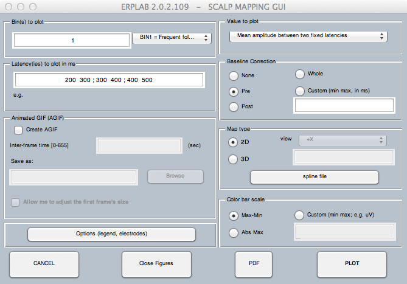

ERPLAB provides a simple interface into EEGLAB's topographic mapping functions, which you will access by selecting ERPLAB > Plot ERP Scalp Maps. This routine allows you to plot the data from a selected time period for a selected set of bins from the currently selected ERPset. The GUI is shown below, along with an example of the output.
To plot a set of topographic maps, you start by selecting which bin or bins will be plotted. The popup menu allows you to see the labels for each bin so that you can remember what information is stored in each bin. You next select the time period to plot. You can select the Instantaneous amplitude, which plots the voltage distribution at a single time point (which you specify in the Latency(ies) field). Alternatively, you can provide a list of time points (e.g., "100 150 200 250 300" or equivalently "100:50:300").
You can instead select Mean amplitude or Area amplitude, in which case you provide two time points to describe the beginning and end of the time range. You can also provide multiple sets of time ranges, separated by semicolons, as shown in the screenshot below (e.g., "200 300 ; 300 400; 400 500" to plot maps of mean amplitude from200-300, 300-400, and 400-500).

You must also select a baseline correction period, just as in plotting ERP waveforms. Finally, you select a scaling option.
If you select Max-Min, the routine automatically chooses a scale for each bin on the basis of the minimum and maximum voltages found in that bin (e.g., the chosen scale might go from -4 µV to +9 µV). If you select Abs Max, the routine finds the minimum and maximum values, and creates a symmetrical scale depending on which has a greater absolute value (e.g., the chosen scale might go from -9 µV to +9 µV). For these two options, each bin is scaled separately. A third option is Custom, which allows you to specify the minimum and maximum values (e.g., you might put -5 +5 in the text box). In this case, the scale is the same for each bin. There are a variety of additional plotting options (e.g., turning on or off electrode markers) that are accessed with the Options button.
You can also choose between 2D maps (which always use a top viewpoint) and 3D maps (which allow you to specify the viewpoint). The following is an example of the 2D maps, created with the parameters shown in the screenshot above.
The topographic plotting routine requires that the location of each electrode is specified (not just the name, but the 3-D coordinates). EEGLAB provides a set of tools for setting the electrode locations in the current EEG structure, accessed via Edit > Channel Locations, and this can be done very easily by using a set of standard coordinates based on the electrode names. Ordinarily, you will do this prior to averaging. If, however, you select ERPLAB > Plot ERP Scalp Maps without first setting the channel locations, ERPLAB will allow you to use EEGLAB's channel location GUI to set the channel locations within the current ERP structure (see the screenshots below). We typically find that we can simply accept the default settings.


You may instead select 3D scalp maps, as shown in the screenshot below.

Plotting a 3D topo maps requires creating a spline file (which is used in the interpolation of values across the model head). If you haven't yet plotted the data from a given ERPset, you probably won't have a spline file associated with it. If this happens, you will get the window shown in the screenshot below. If you've already created a spline file for this set of electrodes, you can specify its location. If you haven't already created the spline file, you will tell it to create a new one and give a name for the file. If you check Save ERPset with new spline file path to disk, it will save a new version of your ERPset with information about how to find the spline file in the future.

| <<Plotting ERP Waveforms | Table of Contents | Saving and Loading ERPsets>> |